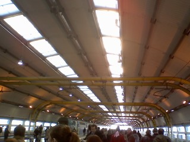

For many years, I pondered what I would do with my short time on this planet. I wondered if I could be physically inclined, mechanically skilled or maybe even musically proficient. In fact, all of these things are what I enjoy doing to occupy my time: playing guitar, listening to music, tinkering on my car whether it needs it or not and of course exploring all the local trails near my house. I pledge to continue on in my search for how I can truly be happy in life. While I feel that some may never find what makes them happy, I will not let anything dissuade me in my pursuit.
Educationally, I have learned in many different fields of study. I have received a degree in Business Management, which I hope to utilize in the future to start my own business. I have many ideas, plenty of knowledge and an ever increasing thirst for more. I hope that one day my experience in the field will prepare me to be successful. Right now, I am focused on starting a career and my life. I have started this website to showcase my programming projects that I have participated in and created.
Any chance I get, I take advantage of the beautiful outdoors. I enjoy hiking, biking, climbing and moving around in general. I've been up and down the state, finding at every turn something unique and interesting. Being surrounded by wonderful nature makes it easy. I also like travelling to explore and discover.
While the California coast has a cornucopia of sceneries to enjoy, there's something to be said for experiencing something new. I've been to Europe twice and have explored and crossed into 4 different countries. I've driven nearly 800 kilometres across Ireland, including moving through the crazy streets of Dublin. I hope to continue my endeavours and explore more than 10 countries.